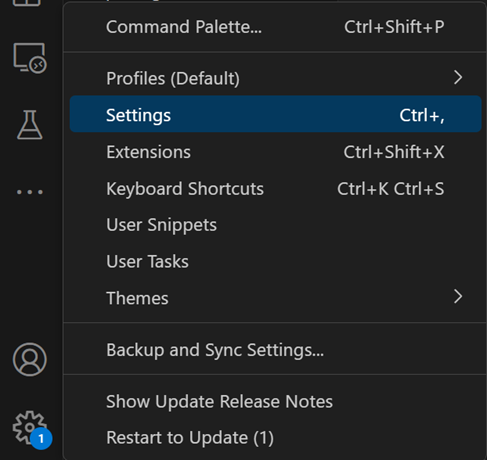
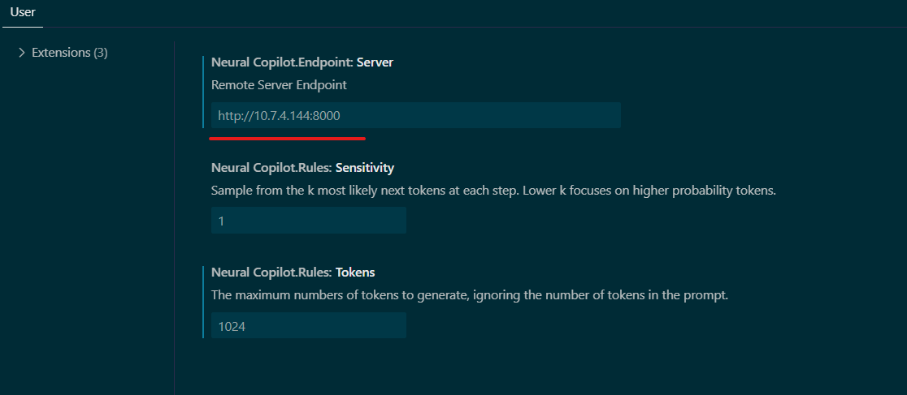
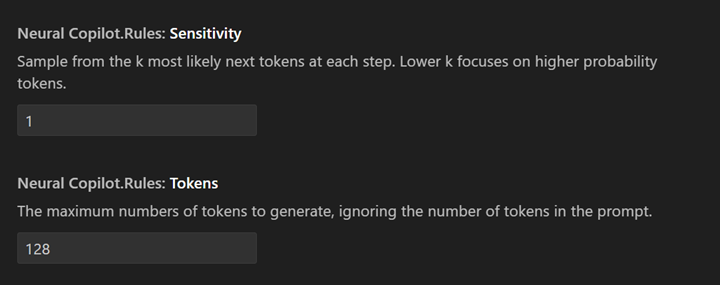
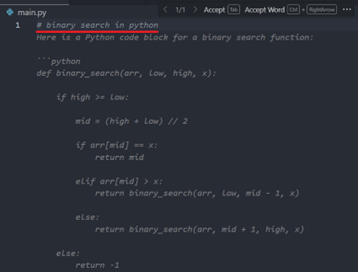
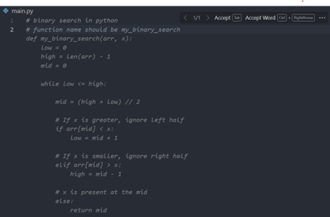
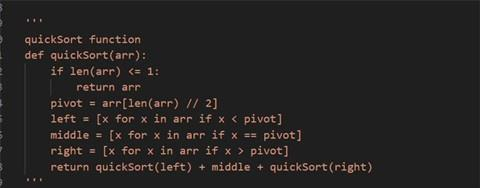
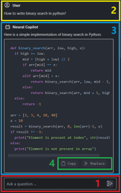
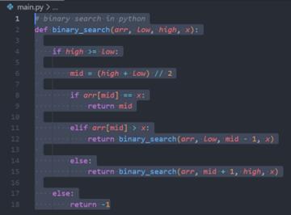
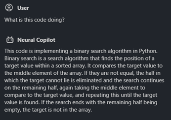

Build MegaService of CodeGen on Gaudi¶
This document outlines the deployment process for a CodeGen application utilizing the GenAIComps microservice pipeline on Intel Gaudi2 server. The steps include Docker images creation, container deployment via Docker Compose, and service execution to integrate microservices such as llm. We will publish the Docker images to the Docker Hub soon, further simplifying the deployment process for this service.
üöÄ Build Docker Images¬∂
First of all, you need to build the Docker images locally. This step can be ignored after the Docker images published to the Docker Hub.
1. Git Clone GenAIComps¶
git clone https://github.com/opea-project/GenAIComps.git
cd GenAIComps
2. Build the LLM Docker Image¶
docker build -t opea/llm-tgi:latest --build-arg https_proxy=$https_proxy --build-arg http_proxy=$http_proxy -f comps/llms/text-generation/tgi/Dockerfile .
3. Build the MegaService Docker Image¶
To construct the Mega Service, we utilize the GenAIComps microservice pipeline within the codegen.py Python script. Build the MegaService Docker image via the command below:
git clone https://github.com/opea-project/GenAIExamples
cd GenAIExamples/CodeGen/docker
docker build -t opea/codegen:latest --build-arg https_proxy=$https_proxy --build-arg http_proxy=$http_proxy -f Dockerfile .
4. Build the UI Docker Image¶
Construct the frontend Docker image via the command below:
cd GenAIExamples/CodeGen/docker/ui/
docker build -t opea/codegen-ui:latest --build-arg https_proxy=$https_proxy --build-arg http_proxy=$http_proxy -f ./docker/Dockerfile .
Then run the command docker images, you will have the following 3 Docker images:
opea/llm-tgi:latestopea/codegen:latestopea/codegen-ui:latest
üöÄ Start MicroServices and MegaService¬∂
The CodeGen megaservice manages a single microservice called LLM within a Directed Acyclic Graph (DAG). In the diagram above, the LLM microservice is a language model microservice that generates code snippets based on the user’s input query. The TGI service serves as a text generation interface, providing a RESTful API for the LLM microservice. The CodeGen Gateway acts as the entry point for the CodeGen application, invoking the Megaservice to generate code snippets in response to the user’s input query.
The mega flow of the CodeGen application, from user’s input query to the application’s output response, is as follows:
flowchart LR
subgraph CodeGen
direction LR
A[User] --> |Input query| B[CodeGen Gateway]
B --> |Invoke| Megaservice
subgraph Megaservice["Megaservice"]
direction TB
C((LLM<br>9000)) -. Post .-> D{{TGI Service<br>8028}}
end
Megaservice --> |Output| E[Response]
end
subgraph Legend
direction LR
G([Microservice]) ==> H([Microservice])
I([Microservice]) -.-> J{{Server API}}
end
Setup Environment Variables¶
Since the docker_compose.yaml will consume some environment variables, you need to setup them in advance as below.
export no_proxy=${your_no_proxy}
export http_proxy=${your_http_proxy}
export https_proxy=${your_http_proxy}
export LLM_MODEL_ID="meta-llama/CodeLlama-7b-hf"
export TGI_LLM_ENDPOINT="http://${host_ip}:8028"
export HUGGINGFACEHUB_API_TOKEN=${your_hf_api_token}
export MEGA_SERVICE_HOST_IP=${host_ip}
export LLM_SERVICE_HOST_IP=${host_ip}
export BACKEND_SERVICE_ENDPOINT="http://${host_ip}:7778/v1/codegen"
[!NOTE] Please replace the
host_ipwith you external IP address, do not uselocalhost.
Start the Docker Containers for All Services¶
cd GenAIExamples/CodeGen/docker/gaudi
docker compose -f docker_compose.yaml up -d
Validate the MicroServices and MegaService¶
TGI Service
curl http://${host_ip}:8028/generate \
-X POST \
-d '{"inputs":"Implement a high-level API for a TODO list application. The API takes as input an operation request and updates the TODO list in place. If the request is invalid, raise an exception.","parameters":{"max_new_tokens":256, "do_sample": true}}' \
-H 'Content-Type: application/json'
LLM Microservices
curl http://${host_ip}:9000/v1/chat/completions\
-X POST \
-d '{"query":"Implement a high-level API for a TODO list application. The API takes as input an operation request and updates the TODO list in place. If the request is invalid, raise an exception.","max_new_tokens":256,"top_k":10,"top_p":0.95,"typical_p":0.95,"temperature":0.01,"repetition_penalty":1.03,"streaming":true}' \
-H 'Content-Type: application/json'
MegaService
curl http://${host_ip}:7778/v1/codegen -H "Content-Type: application/json" -d '{
"messages": "Implement a high-level API for a TODO list application. The API takes as input an operation request and updates the TODO list in place. If the request is invalid, raise an exception."
}'
Enable LangSmith to Monitor Application (Optional)¶
LangSmith offers tools to debug, evaluate, and monitor language models and intelligent agents. It can be used to assess benchmark data for each microservice. Before launching your services with docker compose -f docker_compose.yaml up -d, you need to enable LangSmith tracing by setting the LANGCHAIN_TRACING_V2 environment variable to true and configuring your LangChain API key.
Here’s how you can do it:
Install the latest version of LangSmith:
pip install -U langsmith
Set the necessary environment variables:
export LANGCHAIN_TRACING_V2=true
export LANGCHAIN_API_KEY=ls_...
üöÄ Launch the UI¬∂
To access the frontend, open the following URL in your browser: http://{host_ip}:5173. By default, the UI runs on port 5173 internally. If you prefer to use a different host port to access the frontend, you can modify the port mapping in the docker_compose.yaml file as shown below:
codegen-xeon-ui-server:
image: opea/codegen-ui:latest
...
ports:
- "80:5173"

Install Copilot VSCode extension from Plugin Marketplace as the frontend¶
In addition to the Svelte UI, users can also install the Copilot VSCode extension from the Plugin Marketplace as the frontend.
Install Neural Copilot in VSCode as below.

How to Use¶
Service URL Setting¶
Please adjust the service URL in the extension settings based on the endpoint of the CodeGen backend service.
 
Customize¶
The Copilot enables users to input their corresponding sensitive information and tokens in the user settings according to their own needs. This customization enhances the accuracy and output content to better meet individual requirements.

Code Suggestion¶
To trigger inline completion, you’ll need to type # {your keyword} (start with your programming language's comment keyword, like // in C++ and # in python). Make sure the Inline Suggest is enabled from the VS Code Settings.
For example:

To provide programmers with a smooth experience, the Copilot supports multiple ways to trigger inline code suggestions. If you are interested in the details, they are summarized as follows:
Generate code from single-line comments: The simplest way introduced before.
Generate code from consecutive single-line comments:

Generate code from multi-line comments, which will not be triggered until there is at least one
spaceoutside the multi-line comment):

Automatically complete multi-line comments:

Chat with AI assistant¶
You can start a conversation with the AI programming assistant by clicking on the robot icon in the plugin bar on the left:

Then you can see the conversation window on the left, where you can chat with the AI assistant:

There are 4 areas worth noting as shown in the screenshot above:
Enter and submit your question
Your previous questions
Answers from AI assistant (Code will be highlighted properly according to the programming language it is written in, also support streaming output)
Copy or replace code with one click (Note that you need to select the code in the editor first and then click “replace”, otherwise the code will be inserted)
You can also select the code in the editor and ask the AI assistant questions about the code directly. For example:
Select code

Ask question and get answer
